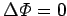
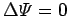

Inhalt Index DeskTop Bronstein

 Funktionentheorie Funktionen einer komplexen Veränderlichen Konforme Abbildung Superpositionsprinzip
Funktionentheorie Funktionen einer komplexen Veränderlichen Konforme Abbildung Superpositionsprinzip


Ein von mehreren Quellen, Senken und Wirbeln erzeugtes Feld ergibt sich rechnerisch durch additive Überlagerung der durch sie erzeugten Einzelfelder, d.h. durch Addition ihrer komplexen Potentiale bzw. Stromfunktionen.
Mathematisch gesehen ist das durch die Linearität der LAPLACEschen Differentialgleichungen  und  möglich.